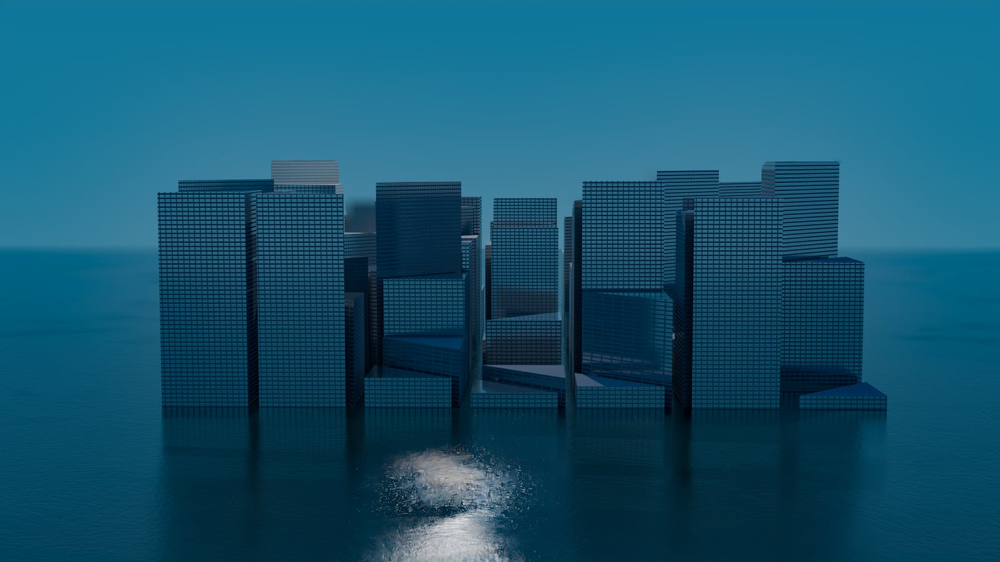

02 — SELECTED WORK
Surfacing with proof. Numbers first.
VR Baseball
BENCH REPORT — SPATIAL TRAINING
ENGINEUnity / C#
PLATFORMMeta Quest 3
FRAME BUDGET13.8 ms
ACHIEVED72 fps held
TRACKED INPUT6-DoF + hands
ROLESolo — design → code
CONSTRAINT THAT HURT: a pitch is readable for ~400 ms. Every millisecond of render latency is subtracted from a human decision, not from a spec sheet.


IYH DIGITAL TWIN — OMNIVERSEUSC IYA

PAVILIA — PORTAL ARCHITECTURESPATIAL